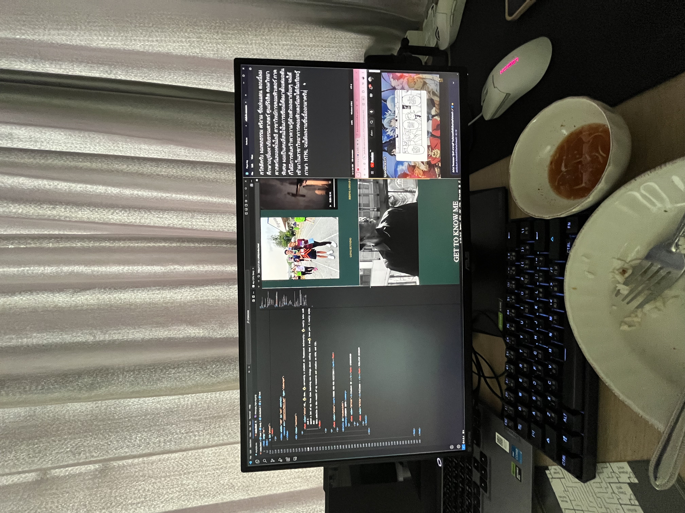

|

From my perspectiveI envision myself becoming a skilled software developer with expertise in modern technologies. I want to contribute to creating innovations that can genuinely improve people's lives,whether it's through developing applications or software that facilitate everyday tasks. |
Year 2 The second year was more challenging but rewarding. I developed a deeper understanding of software design, problem-solving, and working with tools like Git and Cloud Computing. Small team projects helped me apply my growing technical knowledge and understand more complex data structures. |
|---|
|
Year 3 By the third year, I applied my skills in real-world projects and gained practical experience through an internship. I explored areas like AI and Data Science, while also developing soft skills such as presenting, teamwork, and time management. This year gave me a solid grasp of working in tech environments. |
Year 4In my final year, I worked on more advanced projects, using all the knowledge I’d gained. My understanding of system architecture and complex problem-solving deepened as I tackled real-world challenges in team settings, preparing me for the next step in my career. |
|---|